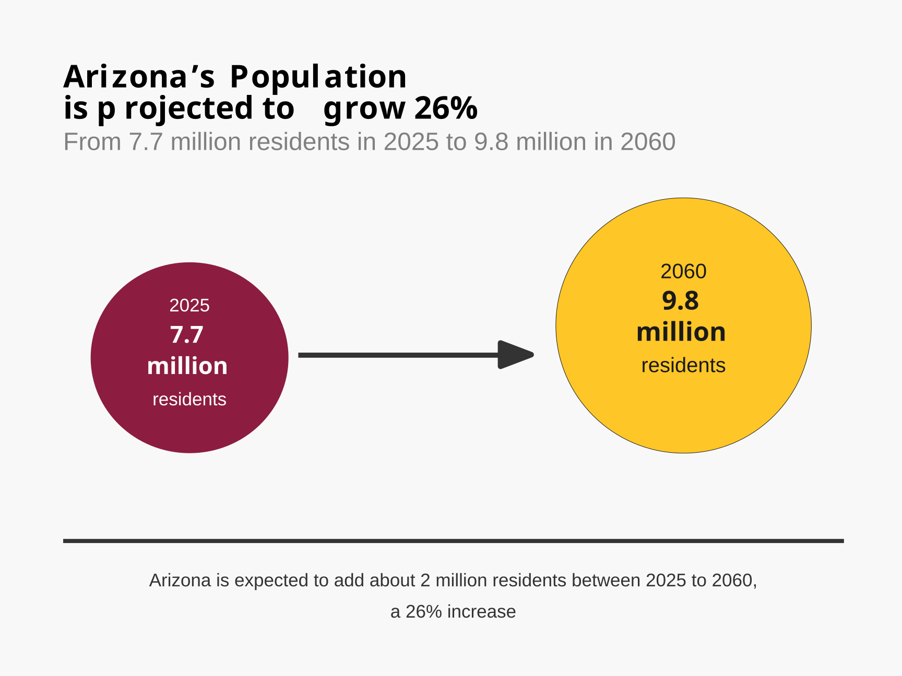

D1 · Story Frame
One state, different directions
Arizona is projected to add more than two million residents between 2025 and 2060. However, the statewide total hides major differences between counties. The central question of this story is: Where is Arizona's future population growth expected to occur, and which counties are projected to move in the opposite direction?
Methods and source: This story uses the Arizona Office of Economic Opportunity's 2025–2060 population projections. County projections are compared to show differences in expected population change across Arizona. Any calculations or transformations used in later figures and tables are documented with those elements.
D2 · Editorial Figures
D3 · Accessible Data Table
Arizona's statewide growth masks major differences between counties. Pinal and Maricopa counties are projected to add large numbers of residents, while several rural counties are projected to have smaller populations in 2060 than in 2025.
| County | 2025 population | 2060 population | Numeric change | Percent change |
|---|---|---|---|---|
| Pinal | 502,100 | 1,096,900 | +594,800 | +118.5% |
| Maricopa | 4,787,800 | 6,070,000 | +1,282,200 | +26.8% |
| Yuma | 222,100 | 289,100 | +67,000 | +30.2% |
| Yavapai | 253,600 | 297,900 | +44,300 | +17.5% |
| Cochise | 129,000 | 120,500 | -8,500 | -6.6% |
| Gila | 53,900 | 48,700 | -5,200 | -9.6% |
| Navajo | 111,400 | 96,400 | -15,000 | -13.5% |
| La Paz | 17,300 | 14,000 | -3,300 | -19.1% |
Source: Arizona Office of Economic Opportunity, Arizona State and County Population Projections: 2025 to 2060, Medium Series, published December 18, 2025.
Transformation: The 2025 and 2060 population values are reproduced from the OEO Medium Series spreadsheet. Numeric change was calculated as the 2060 projection minus the 2025 population. Percent change was calculated as numeric change divided by the 2025 population and rounded to one decimal place.
D4 · Responsive SVG

D5-D6 · System and Documentation
Extend Module 1 patterns, then link your sources, asset credits/licenses, test record, transformation notes, and AI disclosure.